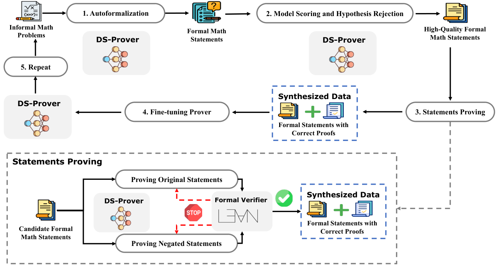

DeepSeek-Prover：用大规模合成数据训练 Lean 形式化证明模型¶
💡 DeepSeek-Prover 把自然语言数学题转成 Lean 命题，过滤低价值与矛盾假设，再并行尝试证明命题及其否定，用验证通过的数据反复训练证明模型。
形式化定理证明的优势是可以用证明助手检查正确性，瓶颈却是训练数据稀缺：自然语言数学内容很多，带有可编译证明的 Lean 数据很少。DeepSeek-Prover 以 DeepSeekMath-Base 7B 为起点，建立从自然语言题目到形式命题、证明生成、验证和迭代训练的数据闭环。论文的主要贡献是数据合成与质量控制，而不是新的强化学习算法。它累计生成约 800 万条形式化命题—证明数据，在 miniF2F 和部分 FIMO 题目上验证扩展收益；同时专门处理“命题能被证明，但因为前提矛盾而没有数学意义”的数据问题。
任务：证明形式命题，而非只写自然语言解答¶
Lean 中的输入是有明确类型、假设和目标的形式命题，输出为能通过检查的 proof。语法正确不等于证明成立；验证器需要检查推导是否完成目标。另一方面，通过 Lean 验证只保证形式化命题在所给前提下成立，并不自动保证它忠实表达了原来的自然语言题意。
方法集中于条件明确、目标清晰的高中和本科竞赛数学题，偏重代数与数论，较少覆盖需要复杂定义和构造的高等数学。原始收集得到 869,659 道自然语言数学题。
自动形式化与双重过滤¶

先使用 MMA 数据训练形式化能力：MMA 将 mathlib 中的形式化命题反向翻译成自然语言，模型再学习从自然语言描述恢复 Lean 声明。这里首先生成的是 theorem statement，证明仍待补全。
第一层是价值过滤。模型根据提示与示例，把命题评为 excellent、good、above average、fair 或 poor，丢弃后两类，减少过于简单或质量较差的数据。作者人工检查评分与直觉相符，但这仍是启发式筛选，不是形式化证明的数学质量度量。
第二层是假设拒绝。对于上下文 \(\Gamma\) 和目标 \(P\)，除考虑 \(\Gamma\vdash P\) 外，还尝试证明 \(\Gamma\vdash\mathrm{False}\)。若能从前提推出矛盾，任何结论都可通过爆炸原理成立，这类命题应被删除。
论文示例把“所有复数都同时满足若干不可能的幂等式”写成前提；取 \(z=1\) 即可推出矛盾。如果只检查目标 proof 是否编译，这种样本会被误认为有效数学训练数据。经过两层过滤，剩余 712,073 条形式命题。
同时证明命题与否定¶
自动形式化后仍至少有约 20% 的命题可能错误，单向反复尝试证明会浪费大量采样。作者并行运行两路：
任一路找到经 Lean 验证的证明，就停止相应搜索。每路最多尝试 \(k\) 次；若证明否定成功，说明原形式命题在当前假设下不成立，但它的否定及证明仍可作为训练数据。因此这一步既节省无效证明预算，又增加有效监督。
“证明否定”与前一节“证明 False”不同：前者判断具体目标的真假，后者判断整组假设是否矛盾。两路搜索也不能保证对所有命题都终止，超过预算时只是暂时没有找到证明，不能据此判断命题为假。
迭代增强与训练设置¶
用新生成且验证通过的数据微调模型，再让更强的模型继续合成与证明，直到收益趋缓。数据闭环同时改善形式化和证明能力，最终累计约 800 万条 theorem-proof 数据。
训练基础是 DeepSeekMath-Base 7B，并继续加入 mathlib 和合成数据；global batch 512，恒定学习率 \(10^{-4}\)，warmup 6,000 步。论文比较时区分单次或较小预算的生成，与大量采样下的累计成功率；自动验证使更多采样可以找到原本低概率的正确 proof，但这不等于模型一次生成就有同样成功率。
主结果与采样预算¶
| Method | Model size | Generation times | miniF2F-valid | miniF2F-test |
|---|---|---|---|---|
| COPRA (GPT-3.5) ( Thakur et al., 2023 ) | - | \(1\times 60\) | - | \(9.0\%\) |
| COPRA (GPT-4) ( Thakur et al., 2023 ) | - | \(1\times 60\) | - | \(26.6\%\) |
| Proof Artifact Co-Training ( Han et al., 2021 ) | 837M | \(1\times 8\times 512\) | \(23.9\%\) | \(24.6\%\) |
| Proof Artifact Co-Training ( Han et al., 2021 ) | 837M | \(8\times 8\times 512\) | \(29.3\%\) | \(29.2\%\) |
| ReProver ( Yang et al., 2024 ) | 229M | \(1\times 3751\) | - | \(25.0\%\) |
| Llemma ( Azerbayev et al., 2023 ) | 7B | \(1\times 3200\) | - | \(26.2\%\) |
| Llemma ( Azerbayev et al., 2023 ) | 34B | \(1\times 3200\) | - | \(25.8\%\) |
| Curriculum Learning ( Polu et al., 2022 ) | 837M | \(1\times 8\times 512\) | \(33.6\%\) | \(29.6\%\) |
| Curriculum Learning ( Polu et al., 2022 ) | 837M | \(8\times 8\times 512\) | \(41.2\%\) | \(34.5\%\) |
| Curriculum Learning ( Polu et al., 2022 ) | 837M | \(64\times 8\times 512\) | \(47.3\%\) | \(36.6\%\) |
| Hypertree Proof Search ( Lample et al., 2022 ) | 600M | cumulative | \(58.6\%\) | - |
| Hypertree Proof Search ( Lample et al., 2022 ) | 600M | \(64\times 5000\) | - | \(41.0\%\) |
| GPT-4-turbo 0409 | - | 64 | \(25.4\%\) | \(23.0\%\) |
| DeepSeekMath-Base ( Shao et al., 2024 ) | 7B | 128 | \(25.4\%\) | \(27.5\%\) |
| DeepSeek-Prover | 7B | cumulative | 60.2% | 52.0% |
| DeepSeek-Prover | 7B | \(1\) (greedy) | - | \(30.0\%\) |
| DeepSeek-Prover | 7B | \(64\) | - | \(46.3\%\) |
| DeepSeek-Prover | 7B | \(128\) | - | \(46.3\%\) |
| DeepSeek-Prover | 7B | \(8192\) | - | \(48.8\%\) |
| DeepSeek-Prover | 7B | \(65536\) | - | \(50.0\%\) |
miniF2F 的 valid/test 各 244 道题。表中不同方法的 generation times 和树搜索预算明显不同，直接比较最终成功率时必须一起看预算。DeepSeek-Prover 使用 64 次生成时，test 达到 46.3%；进一步扩大到 65,536 次为 50.0%，跨评测累计成功率为 52.0%。后者体现采样扩展收益，但不能写成 pass@1。
FIMO 是更难的奥数形式化集合，共 149 道题；每题 100 次尝试解决 4 道，扩大至 4,096 次后多解决 1 道。它表明方法开始触及更难题，远不能据此声称已经具备完整 IMO 水平。自然语言到形式命题、形式命题到证明也各有误差，端到端实用性不能只由 miniF2F 的 proof completion 衡量。
消融：数据、过滤与迭代分别贡献什么¶
| Model | #Tokens | miniF2F-valid | miniF2F-test |
|---|---|---|---|
| - | - | \(25.4\%\) | \(27.5\%\) |
| Mathlib | \(0.238\) B | \(30.3\%\) | \(31.2\%\) |
| Autoformalized Statements | \(3.108\) B | \(48.8\%\) | \(42.6\%\) |
约 0.238B token 的 mathlib 相比不继续训练有增益，但大规模自动形式化数据带来的提升更明显。表中训练 token 数不同，这支持数据扩展路线的有效性，不是严格固定计算量下的来源优劣结论。
| Scored Class | miniF2F-valid | miniF2F-test |
|---|---|---|
| "excellent", "good" and "above average" | \(48.8\%\) | \(42.6\%\) |
| "fair" and "poor" | \(41.4\%\) | \(38.1\%\) |
高评分命题组 test 为 42.6%，低评分组为 38.1%，说明价值评分有帮助。它不意味着低评分样本毫无作用，而是当前筛选策略改善了训练分布。
| Model | miniF2F-valid | miniF2F-test |
|---|---|---|
| iteration 0 | \(38.1\%\) | \(34.0\%\) |
| iteration 1 | \(45.1\%\) | \(39.3\%\) |
| iteration 2 | \(49.2\%\) | \(41.4\%\) |
| iteration 3 | \(54.5\%\) | \(45.1\%\) |
| iteration 4 | \(59.4\%\) | \(46.3\%\) |
迭代过程从初始 test 34.0% 逐步提高，说明用改进模型继续收集验证通过的数据，比仅进行一轮合成更有效。这里的评测预算固定在相应消融设置，不应与主表最大采样预算的结果混用。
| Size | miniF2F-valid | miniF2F-test |
|---|---|---|
| 1,000 | \(22.95\%\) | \(24.18\%\) |
| 10,000 | \(32.79\%\) | \(31.97\%\) |
| 100,000 | \(36.07\%\) | \(37.7\%\) |
| 1,000,000 | \(39.34\%\) | \(38.11\%\) |
| 8,066,621 | \(42.62\%\) | \(40.16\%\) |
从千级扩展到百万、数百万级样本，整体性能上升，但增益并非逐样本等比例增长。扩展的价值来自更多可学习的命题和证明路径，而不仅是重复同一批证明。
案例与方法边界¶
附录给出自动形式化提示、命题评分提示以及完整 Lean 证明示例。正文分别展示正常的 theorem-proof 对与矛盾前提案例，后者直接解释为什么仅有编译通过不足以保证训练数据有数学意义。
方法依赖现有 Lean 库及基础模型已有的数学与代码知识。若正确思路在采样分布中概率极低，扩大采样仍可能非常昂贵；如果形式化错了题意，验证器也不会替代自然语言语义检查。论文最终证明的是：经过质量控制的大规模合成证明数据，能够显著强化 7B 模型在 Lean 证明补全上的能力。这为后续 Prover 系列引入验证反馈 RL 和搜索提供数据基础，但那些后续方法不属于本文的贡献。